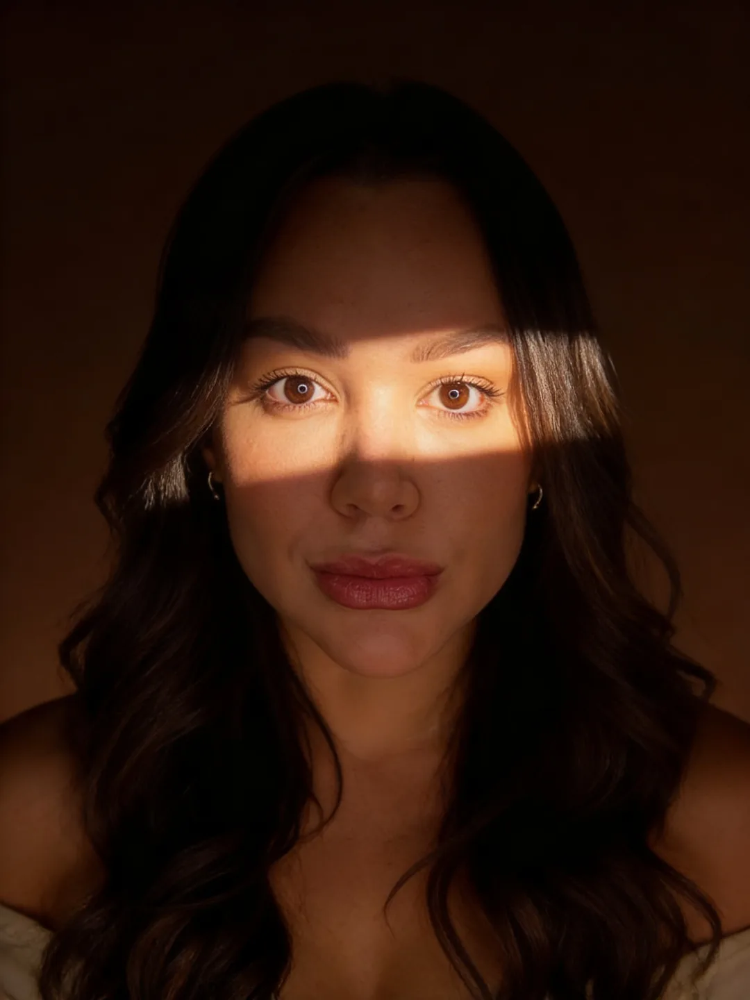
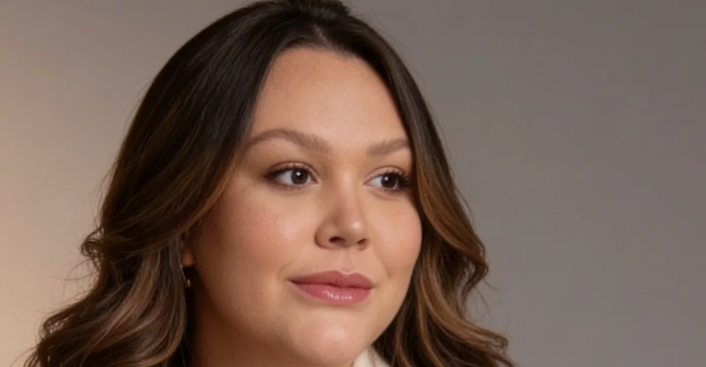
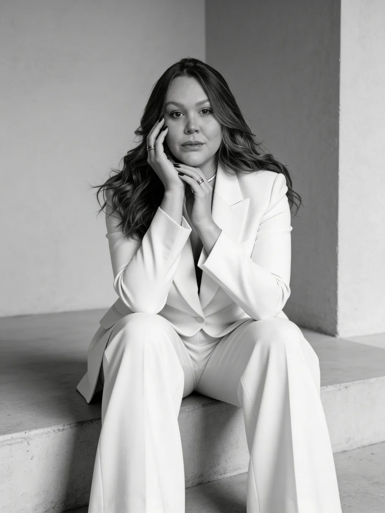
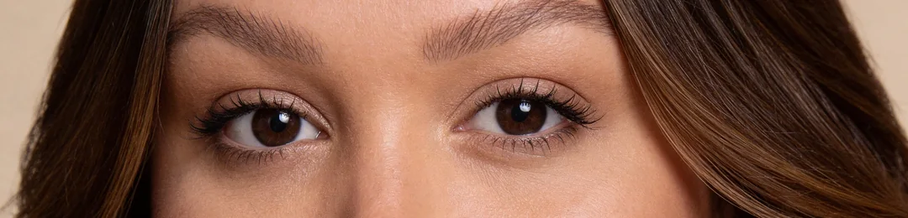
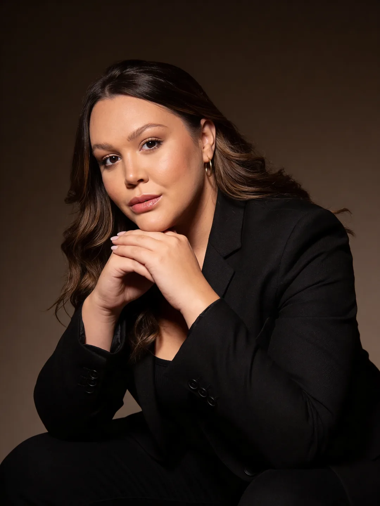
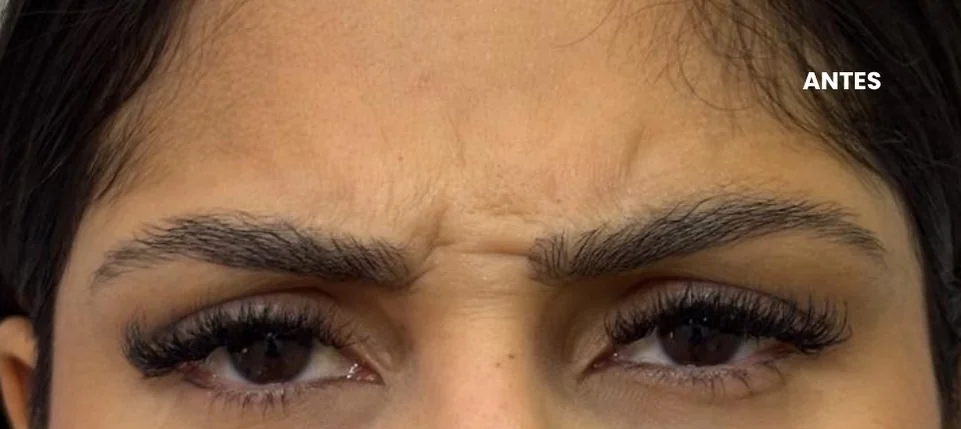
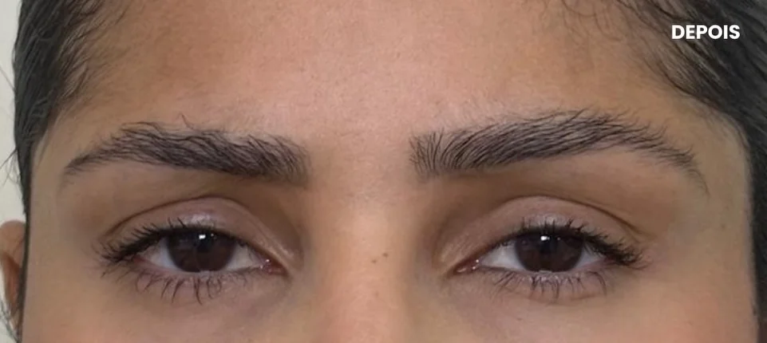
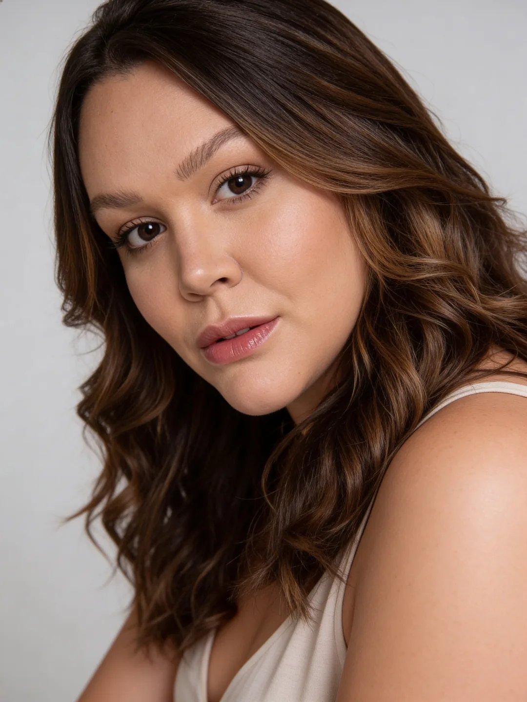
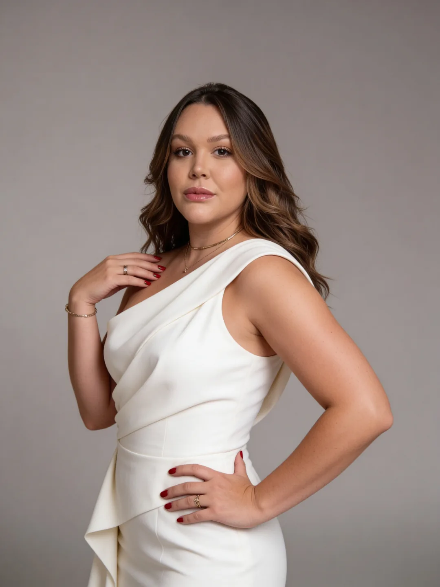
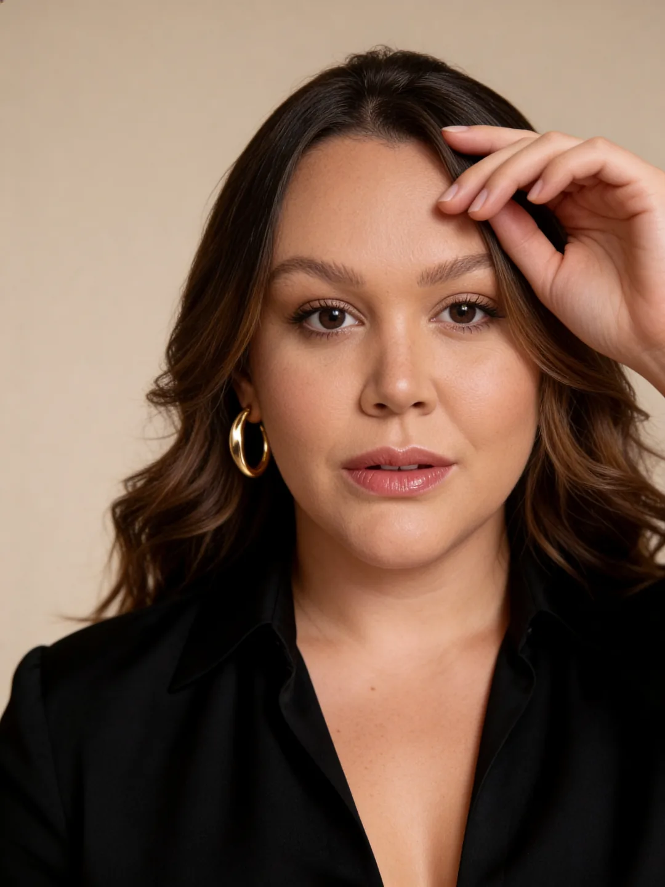

Proposta de feed, carrossel e stories para a Dra. Letícia Arthuso. Nos stories, a caixinha de pergunta e a enquete aparecem só como exemplo: no arquivo para postar elas ficam de fora, e você coloca a do próprio Instagram.









